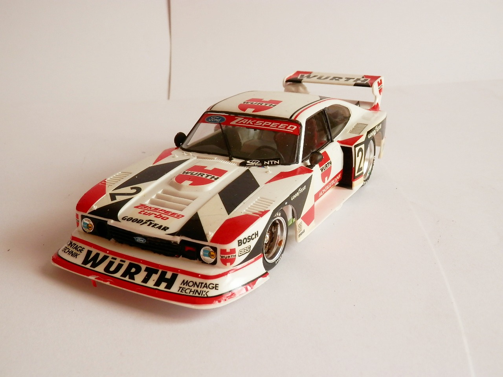
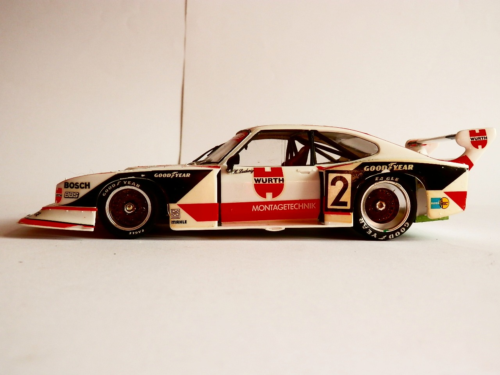
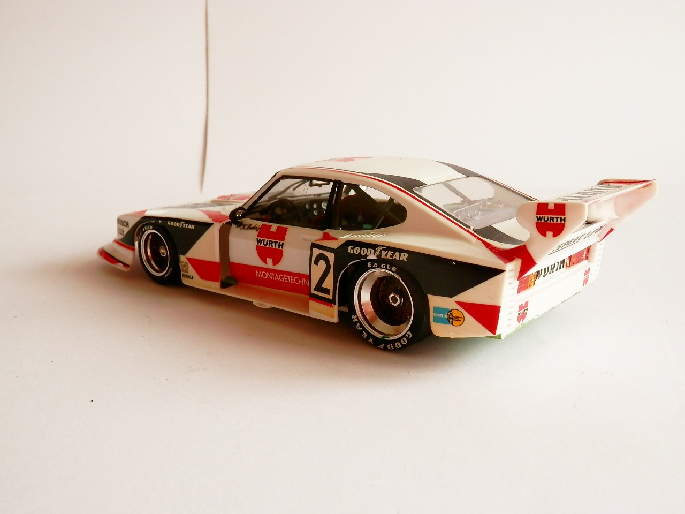

Auto e veicoli stradali · scale model archive
Ford Capri Gr. 5
Ford Capri Gr. 5 — Kit: Tamiya, Scale: 1/24. Zakspeed team 1979 Group 5 cars were really awesome

Photo gallery


English description
Zakspeed team 1979
Group 5 cars were really awesome
Descrizione italiana
Team Zakspeed, 1979. Le auto del Gruppo 5 erano davvero fantastiche.